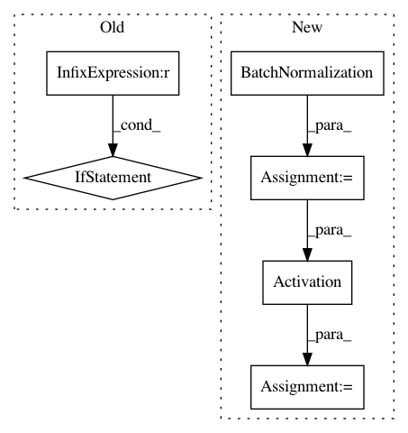

b80fb3bdcfeac64d91b7365be1196392e013dcb8,autokeras/generator.py,RandomConvClassifierGenerator,generate,#RandomConvClassifierGenerator#,80
Before Change
model = Sequential()
for i in range(conv_num):
kernel_num = randint(10, 30)
if i == 0:
model.add(conv(kernel_num,
input_shape=self.input_shape,
kernel_size=filter_shape,
activation="relu",
padding="same"))
else:
model.add(conv(kernel_num,
kernel_size=filter_shape,
activation="relu",
padding="same"))
if random() > 0.5:
model.add(pool(pool_size=pool_shape, padding="same"))
if random() > 0.5:
model.add(Dropout(dropout_rate))
After Change
kernel_num = randint(10, 30)
output_tensor = conv(kernel_num, filter_shape,
padding="same")(output_tensor)
output_tensor = BatchNormalization()(output_tensor)
output_tensor = Activation("relu")(output_tensor)
if random() > 0.5:
output_tensor = pool(pool_size=pool_shape, padding="same")(output_tensor)
if random() > 0.5:
output_tensor = Dropout(dropout_rate)(output_tensor)
output_tensor = Flatten()(output_tensor)
for i in range(dense_num):
node_num = randint(128, 1024)
output_tensor = Dense(node_num, activation="relu")(output_tensor)
if random() > 0.5:
output_tensor = Dropout(dropout_rate)(output_tensor)
output_tensor = Dense(self.n_classes, activation="softmax")(output_tensor)
model = Model(input_tensor, output_tensor)
model.compile(loss="categorical_crossentropy",
optimizer=Adam(),
metrics=["accuracy"])
In pattern: SUPERPATTERN
Frequency: 3
Non-data size: 6
Instances
Project Name: jhfjhfj1/autokeras
Commit Name: b80fb3bdcfeac64d91b7365be1196392e013dcb8
Time: 2018-01-05
Author: jhfjhfj1@gmail.com
File Name: autokeras/generator.py
Class Name: RandomConvClassifierGenerator
Method Name: generate
Project Name: balakg/posewarp-cvpr2018
Commit Name: 20309f3b9e17e321737400bde8e81e84d14eea79
Time: 2017-06-20
Author: balakg@thousandeyes.csail.mit.edu
File Name: networks.py
Class Name:
Method Name: myConv